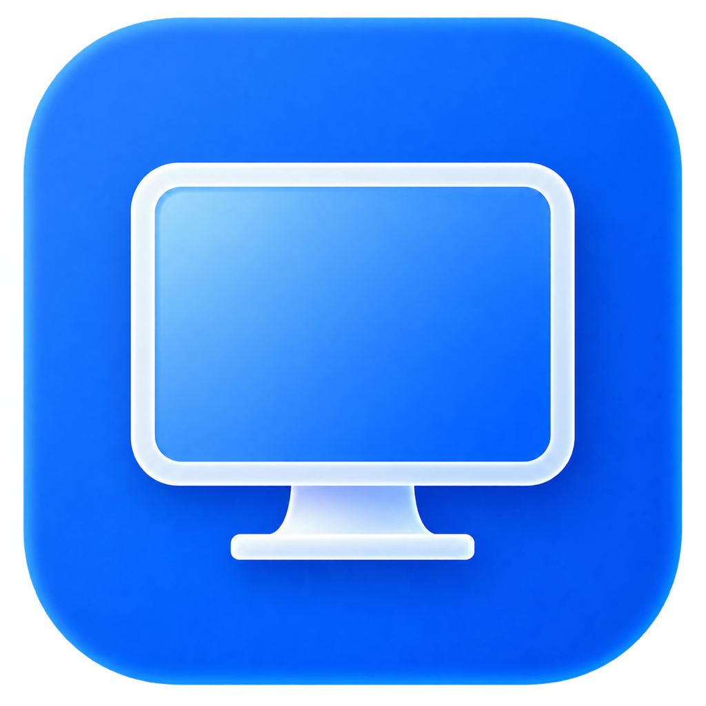

Glassy Desk for Mac
Your Mac.
Ready for anywhere.
The companion to Glassy Desk on iPhone and iPad.
A much faster, smoother connection than standard VNC.
DMG installer · macOS 14 or later · Apple silicon & Intel
Version 0.2.12 · Release notes & all downloads
On your iPhone or iPad? Open bunn.dev/glassydesk/mac on your Mac to install.
01 / Make yourself at home
A small app.
A big difference.
Install once on the Mac you want to control.
- Download and open the Glassy Desk disk image (.dmg) above.
- In the welcome window, drag Glassy Desk onto the Applications folder. Wait for the copy to finish, then open Glassy Desk from Applications.
- Confirm Open if macOS asks, then follow the permission steps below. You can eject the disk image after copying the app. Keep Allow connections switched on for your next connection.
The Mac companion is signed and notarized. The iPhone and iPad app has timed free sessions, with longer sessions available through Glassy Desk Pro.
02 / You’re in control
Three quick steps.
One ready Mac.
Glassy Desk explains each permission and keeps a small guide beside System Settings.
More from Apple: screen recording and Accessibility permissions.
03 / A simple hello
Point. Pair.
You’re there.
Start with both devices on the same Wi-Fi. For different networks, set up Tailscale first.
- On your Mac, open Glassy Desk and choose Add Device to show its pairing code.
- On your iPhone or iPad, open Glassy Desk. Choose Add Mac → Set Up Fast Connection → Scan Mac’s Code.
- Allow Camera access to scan and Local Network access if prompted. Check that it’s your Mac, then confirm the pairing.
Keep your Mac awake and connected to the network. To have Glassy Desk ready after signing in, enable Open Glassy Desk at login in the Mac app’s Settings.
Optional / Connect away from home
A different network.
The same familiar Mac.
Tailscale is a separate VPN app that creates a private connection between your devices. Use it to reach your Mac from a café, another Wi-Fi network, or mobile data.
Install on both devices.
Get Tailscale for your Mac and your iPhone or iPad. Sign in with the same account so both join your private network.
Get TailscaleAllow the connection.
Follow Tailscale’s setup prompts. On iPhone or iPad, allow the VPN configuration. On Mac, approve its network extension if asked. Check that both devices are connected in Tailscale.
Mac permission helpPair before you go.
With Tailscale connected, scan your Mac’s Glassy Desk code while you’re at the Mac. The code includes its local and VPN addresses. Already paired before installing Tailscale? Scan a fresh code from the same Mac to add its new address.
Take your Mac with you.
Leave the Mac awake and online, with Glassy Desk open and Allow connections enabled. Keep Tailscale connected on both devices. In Glassy Desk, open your saved Mac as usual.
No router port forwarding or exit node is needed for this setup. Tailscale provides the private network; Glassy Desk provides the remote desktop.
A little help for the road.
I’m already away. Can I pair manually?
Yes, if Tailscale is already connected on both devices and you can get the current pairing code from the Mac. In Tailscale, select your Mac and copy its 100.x.x.x address or full .ts.net name. In Glassy Desk, choose Add Mac → Set Up Fast Connection → Pair Manually → Enter an address, then enter the current code from Add Device on the Mac. You’ll need someone at the Mac or another trusted way to see that code. Setting up before you leave is easiest.
Why doesn’t my Mac appear in Nearby Macs?
Nearby discovery works on your local network. Over Tailscale, use your saved Mac or enter its Tailscale address manually. A local 192.168.x.x address or .local name usually won’t reach your Mac from another network.
Can I use Tailscale with standard VNC?
Yes. Enable Screen Sharing in System Settings → General → Sharing on the Mac. With Tailscale connected on both devices, choose Standard VNC in Glassy Desk. Enter the Mac’s Tailscale address, its Screen Sharing port (usually 5900), and an authorized Mac login. Standard VNC doesn’t need the Glassy Desk Mac companion.
Tailscale is on, but I still can’t connect.
Check that both devices are online in Tailscale, signed into the same private network, and that your Mac is awake. Another VPN can conflict with Tailscale, particularly on iPhone and iPad. If your network is managed, ask its administrator to check device approval and access rules. Make sure Glassy Desk has its Mac permissions and allows connections.
What if I see “This is not the Mac paired with this saved machine”?
The saved address reached a Mac with a different pairing identity. Check the address and that the intended Glassy Desk app is running on the Mac. Only choose Pair a Different Mac when you intend to replace the trusted Mac; an app update should preserve an existing pairing.
Tailscale’s guides: Mac installation · iPhone & iPad installation · Using another VPN
Your next connection.
A little more effortless.
Get your Mac ready, then settle in anywhere.
Download for MacNeed the other half? Get Glassy Desk for iPhone & iPad.